شبنم رضاپور
کسی که PDFها را راضی کرد محتوایشان را بیکموکاست لو بدهند.
این جزوه با استفاده از جزوهساز پاپیروس و به صورت خودکار تولید شده است. ممکن است شامل خطا یا برداشت نادرست باشد و نیازمند بررسی و بازبینی مجدد است.
مهمترین وظیفهٔ هموگلوبین، انتقال اکسیژن از ریه به بافتها و انتقال CO₂ از بافتها به ریه است؛ هموگلوبین مهمترین عملکرد گلبول قرمز را انجام میدهد. در این درس، ساختار هموگلوبین و heme، سنتز heme، ساختارهای پروتئینی globin، اتصال اکسیژن و منحنی dissociation، ژنها و انواع هموگلوبین، hematopoiesis، تنظیم اریتروپوئز و همولیز بررسی میشوند.
هموگلوبین از Heme و Globin ساخته شده است. هر مولکول هموگلوبین بهطور کلی یک تترامر (Tetramer)، یعنی مجموعهای از چهار زنجیره، است و از دو دایمر (Dimer) تشکیل میشود.
هموگلوبین A (HbA)، که در این درس هنگام گفتن «هموگلوبین» معمولاً منظور است، هموگلوبین غالب بزرگسالان است و حدود ۹۷ تا ۹۸ درصد هموگلوبین بزرگسالان را تشکیل میدهد.
HbA از دو دایمر آلفا-بتا تشکیل شده است؛ هر مونومر آلفا با یک مونومر بتا جفت میشود، نه اینکه دو زنجیرهٔ آلفا با دو زنجیرهٔ بتا جفت شوند. این دایمرها با برهمکنشهای غیرکووالانسی به هم متصلاند.
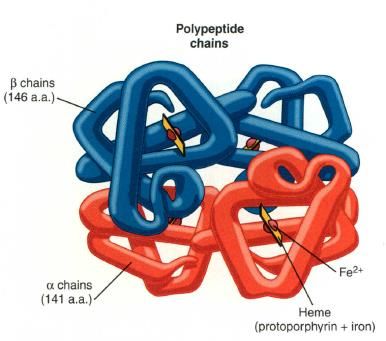
تصویر ۱هر زنجیرهٔ آلفا حدود ۱۴۱ آمینواسید و هر زنجیرهٔ بتا حدود ۱۴۶ آمینواسید دارد. هموگلوبین درون گلبول قرمز بهصورت مونومر یا تکرشتهای آزاد نیست و برای عملکرد طبیعی باید بهصورت تترامر باشد. مونومر پایدار و کارآمد نیست و خیلی سریع پس از ساختهشدن، دایمر تشکیل میدهد. دایمر آلفا-بتا قویترین ساختار هموگلوبین است و تشکیل آن برای پایداری گلوبین تازهسنتزشده ضروری است. تترامرشدن نیز برای عملکرد مناسب هموگلوبین ضرورت دارد. دایمر تا حدی توانایی انتقال اکسیژن و CO₂ دارد، اما عملکرد کامل به تترامر وابسته است.
| سطح سازمانیافتگی هموگلوبین | ویژگی |
|---|---|
| مونومر | بهصورت آزاد پایدار و کارآمد نیست؛ پس از ساختهشدن خیلی سریع دایمر تشکیل میدهد. |
| دایمر آلفا-بتا | قویترین ساختار هموگلوبین است؛ برای پایداری گلوبین تازهسنتزشده ضرورت دارد و تا حدی توانایی انتقال اکسیژن و CO₂ دارد. |
| تترامر | از دو دایمر تشکیل میشود؛ برای عملکرد طبیعی و کامل هموگلوبین ضرورت دارد. |
اتم آهن در مرکز heme قرار دارد و heme در جایگاه مشخصی از globin، یعنی بین هلیکسهای E و F، جای میگیرد. این بخش از globin «پاکت heme» نامیده میشود. هر زنجیرهٔ globin هفت هلیکس دارد که از انتهای N-terminal با حرف A تا انتهای C-terminal با حرف H نامگذاری میشوند.
پاکت heme آبگریز است؛ ورود آب یا مولکولهای قطبی دیگر به آن میتواند موجب اکسیدشدن heme و بههمخوردن ساختار شود. در برخی اختلالات ارثی هموگلوبین، جهش باعث میشود بهجای آمینواسید آبگریز، آمینواسید آبدوست در پاکت قرار گیرد؛ در نتیجه، آب وارد میشود و heme ممکن است از پاکت بیرون بریزد. این اختلالات در جلسات بعد با جزئیات بررسی میشوند.
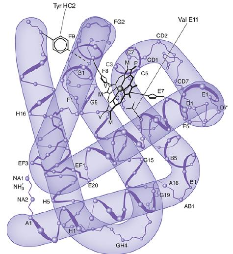
تصویر 2هِم (heme) ساختاری تتراپیرولی دارد؛ یعنی از چهار حلقهٔ پیرول تشکیل شده است. این ساختار اتم آهن را در مرکز خود نگه میدارد و چهار جایگاه کئوردیناسیون آهن را اشغال میکند. اتم آهن در هِمِ دوظرفیتی، ⁺Fe²، است. عدد کئوردیناسیون آهن ۶ است: چهار جایگاه را حلقهٔ هِم اشغال میکند (از طریق چهار اتم نیتروژن pyrrole). یکی از دو جایگاه باقیمانده را هیستیدین پروکسیمال (proximal His) بهطور مستقیم و از طریق اتم نیتروژن ایمیدازول اشغال میکند و جایگاه ششم - در فرم اکسیهِم - توسط مولکول O₂ گرفته میشود. اکسیژن در سمت هیستیدین دیستال (distal His) قرار میگیرد، اما هیستیدین دیستال به آهن متصل نمیشود؛ بلکه از طریق پیوند هیدروژنی و اثرات فضایی/الکترواستاتیکی، اتصال O₂ به آهن را پایدار و تنظیم میکند.
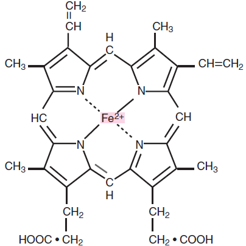
تصویر 3آهن نباید در بدن آزاد باشد، چون در صورت اکسیدشدن میتواند به بافتها آسیب برساند. اتم آهن در مرکز heme قرار میگیرد و heme نیز بهوسیلهٔ globin بستهبندی میشود؛ بنابراین، هم globin و هم heme برای نگهداری ایمن آهن ضروریاند. heme آزاد نیز خطرناک است و باید در globin محصور باشد. heme آزاد درون سلول بهسرعت تخریب و به بیلیروبین تبدیل میشود؛ بیلیروبین عامل زردی نوزادان است. نوزادان مبتلا به زردی را گاهی زیر نور قرار میدهند. این موضوع در درسهای هماتولوژی و بیوشیمی با جزئیات بیشتری بررسی میشود.
وقتی میگوییم هموگلوبین اکسیژنه است، منظور اتصال چهار مولکول O₂ به یک تترامر هموگلوبین است؛ هر مونومر به یک مولکول O₂ متصل میشود.
گلوبین مانند پروتئینهای دیگر از روی mRNA و بهوسیلهٔ ریبوزومها ساخته میشود. پس از ساختهشدن گلوبین، heme با آن ترکیب میشود و هموگلوبین به وجود میآید. وقتی مقدار یا غلظت heme از حدی بیشتر شود، heme اضافی سنتز گلوبین را سرکوب میکند.
همهٔ سلولهای هستهدار بدن میتوانند هموگلوبین بسازند، اما گلبول قرمز بالغ، با وجود اینکه بخش عمدهٔ محتوایش هموگلوبین است، بهدلیل نداشتن هسته این توانایی را ندارد. بیشترین تولید هموگلوبین در پیشسازهای اریتروئیدی مغز استخوان صورت میگیرد؛ از جمله:
برای ساخت heme، پیشسازهای گلبول قرمز به آهن نیاز دارند. ترانسفرین (transferrin) آهن را در خون منتقل میکند، زیرا آهن آزاد نمیماند و باید بهسرعت به مولکولی متصل شود. پیشسازهای گلبول قرمز تعداد زیادی گیرندهٔ ترانسفرین (transferrin receptor) بیان میکنند.
ترانسفرینِ حامل آهن دو اتم ⁺Fe³ دارد و بهوسیلهٔ گیرندهاش اندوسیتوز میشود. سپس در محیط اسیدی اندوزوم، آهن آزاد میشود و در دسترس مولکول heme قرار میگیرد.
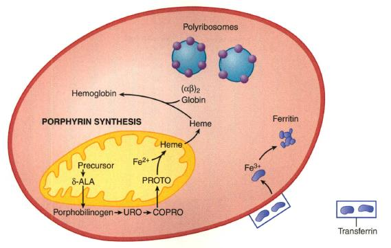
تصویر 4وقتی آهن هنوز در پروتوپورفیرین جای نگرفته، ساختار پیش از آن پروتوپورفیرینوژن نامیده میشود. پروتوپورفیرین آخرین مرحلهای است که آهن هنوز در ساختارش قرار نگرفته است. با ورود آهن به پروتوپورفیرین، heme ساخته میشود. بنابراین، در این بحث دو جزء اصلی هموگلوبین عبارتاند از globin، که پروتئین است، و heme، که ساختاری تتراپیرولی دارد.
مراحل مسیر سنتز heme عبارتاند از:
مراحل ابتدایی و انتهایی ساخت heme، از جمله جایگیری آهن در پروتوپورفیرین، در میتوکندری انجام میشوند. بخشی از مسیر در سیتوپلاسم است و مولکول پس از مرحلهٔ کوپروپورفیرینوژن دوباره وارد میتوکندری میشود.
مهمترین آنزیم تنظیمکنندهٔ سرعت این مسیر ALA synthase است. ferrochelatase یا heme synthase نیز آنزیمی مهم است، اما آنزیم اصلی تنظیمکنندهٔ سرعت مسیر ALA synthase است.
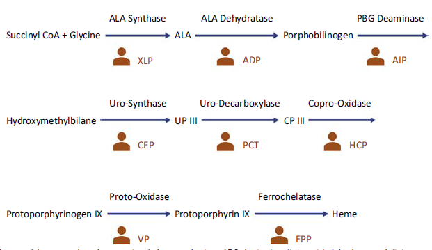
تصویر 5در انتهای مسیر، Protoporphyrinogen IX به Protoporphyrin IX و سپس به Heme میرسد.
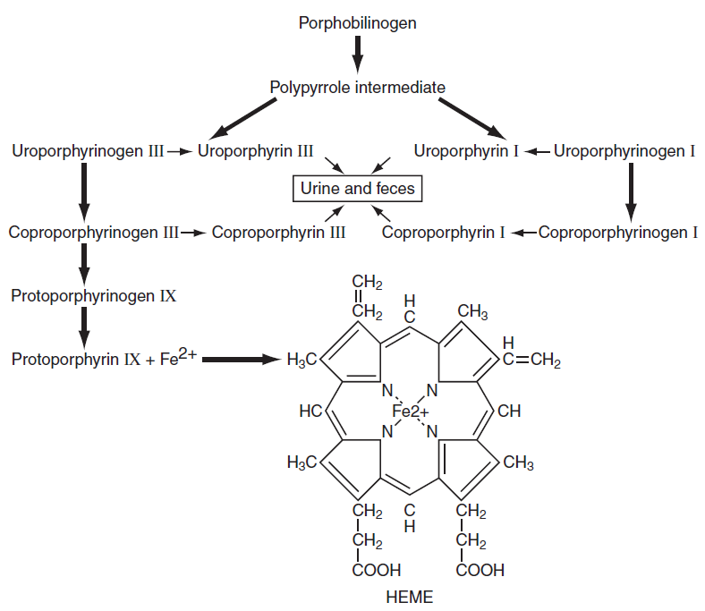
تصویر 6عبارت «Urine and feces» نیز کنار برخی شاخههای مسیر آمده است. واسطههای Uroporphyrinogen I و Coproporphyrinogen I در ساختار heme شرکت نمیکنند و بیشتر از راه ادرار و مدفوع دفع میشوند؛ در مقابل، Uroporphyrinogen III و Coproporphyrinogen III در نهایت در ساخت heme شرکت میکنند.
اختلالات سنتز heme را پورفیریا (porphyria) مینامند.
در بعضی فرمهای پورفیریا، پیشسازهای heme در بدن، مثلاً در پوست یا دندانها، رسوب میکنند و ممکن است دندانها قرمز شوند. فرد فوتوفوبیا دارد و ممکن است از نور پرهیز کند و فقط شب بیرون برود. همچنین ممکن است دچار اختلالات عصبی و حملههای ناگهانی شود.
تخریب heme در نهایت به تولید بیلیروبین میانجامد. بیلیروبین پس از طی مراحلی در روده شکسته میشود و استرکوبیلین تولید میکند؛ استرکوبیلین عامل رنگ مدفوع است.
بسیاری از مطالعات زیستی و بیوشیمیایی دربارهٔ ساختار اول، دوم و سوم پروتئین با استفاده از هموگلوبین و globin انجام شدهاند.
ساختار اول (primary structure): ترتیب آمینواسیدها در زنجیرهٔ پروتئینی است.
ساختار دوم (secondary structure): در globin عمدتاً آلفا هلیکس (alpha helix) است. زنجیرهٔ تازهسنتزشده فقط رشتهای کشیده نیست و حالت فنری دارد. حدود ۷۰ تا ۸۰ درصد ساختار ثانویهٔ globin آلفا هلیکس است.
ساختار ثانویه میتواند بهشکل ورقهٔ بتا (beta sheet) نیز باشد. آلفا هلیکس از نظر ترمودینامیک، عملکرد و تکامل بیشتر بهکار گرفته شده است.
تبدیل پروتئین آلفا هلیکس به بتا شیت در آمیلوئیدوز یا بیماری جنون گاویِ مرتبط با پریونها با مشکل همراه است. پریونها میتوانند باعث تبدیل ساختار پروتئینها به بتا شیت شوند و بدن نمیتواند این بتا شیتها را تخریب کند؛ در نتیجه، بافت آسیب میبیند.
ساختار سوم (tertiary structure): آرایش و تاخوردگی فضایی زنجیرهٔ پروتئینی است. پروتئین تا میخورد، گروههای آلوستریک و گروههای غیرپروتئینی مانند heme در جای خود قرار میگیرند و پروتئین ساختار سهبعدی پیدا میکند؛ heme نیز در پاکت مخصوص خود جای میگیرد.
ساختار چهارم (quaternary structure): در هموگلوبین، آرایش چند زنجیره در تترامر است.
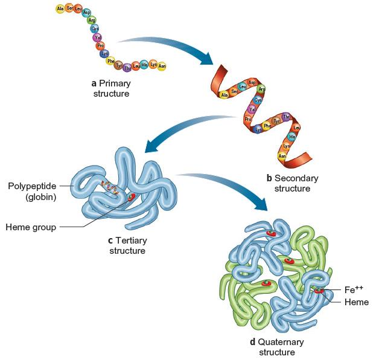
تصویر 7ترمودینامیک مورد بحث در این بخش مربوط به هموگلوبین A بزرگسالان است که از دو دایمر آلفا-بتا تشکیل میشود. وقتی هموگلوبین اکسیژنه است، تترامر در وضعیت relaxed قرار دارد. وقتی deoxygenated میشود، مولکولی به نام 2,3-DPG یا DPG بین زنجیرههای بتا قرار میگیرد و تترامر را تحت فشار قرار میدهد؛ در این وضعیت، هموگلوبین در حالت tense است. حضور DPG باعث میشود هموگلوبین تمایل داشته باشد اکسیژن خود را از دست بدهد؛ بنابراین، DPG برای تحویل اکسیژن اهمیت دارد.
اگر درصد اشباع هموگلوبین از اکسیژن (saturation) را در برابر فشار اکسیژن، PO₂، رسم کنیم، محور افقی فشار اکسیژن را برحسب میلیمتر جیوه و محور عمودی درصد saturation را نشان میدهد. هرچه فشار اکسیژن بیشتر باشد، saturation بیشتر است.
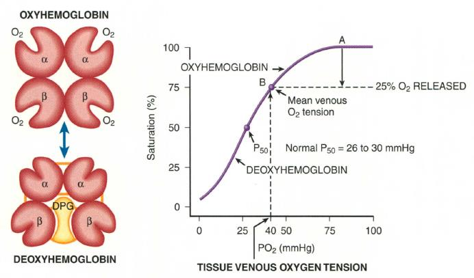
تصویر 8منحنی اشباع هموگلوبین سیگموئیدی است، نه خطی. این شکل به همکاری یا همیاری (cooperativity) مربوط است: جداشدن یا اتصال نخستین O₂ دشوارتر است، اما پس از آن جداشدن یا اتصال اکسیژنهای بعدی آسانتر میشود. برای تصور این موضوع، یک تترامر دارای چهار O₂ را در نظر بگیرید؛ برای جداشدن O₂ نخست انرژی بیشتری لازم است و جداشدن O₂ بعدی آسانتر میشود.
ورود نخستین اکسیژن، شکل فضایی مونومر اکسیژنه را کمی تغییر میدهد. هلیکسها و زاویهها در مقیاس آنگستروم جابهجا میشوند و این تغییر به تترامر منتقل میشود؛ در نتیجه، بر مونومر مجاور اثر میگذارد و آن مونومر آسانتر اکسیژن میپذیرد. برعکس، جداشدن اکسیژن نیز جداشدن اکسیژن از مونومر مجاور را آسانتر میکند. این همکاری باعث شکل سیگموئیدی منحنی میشود.
فشاری که در آن ۵۰ درصد هموگلوبینها اکسیژنهاند، P50 نام دارد. این مقدار برای هموگلوبین معمولاً حدود ۲۶ تا ۳۰ میلیمتر جیوه است و در اسلاید مقدار Normal P50 = 28 mm Hg نیز آمده است. در توضیح مدرس، در فشار حدود ۲۶ تا ۲۷ میلیمتر جیوه حدود ۵۰ درصد محتوای هموگلوبین گلبولهای قرمز اکسیژنه است.
افزایش P50 یعنی برای اکسیژنهشدن ۵۰ درصد هموگلوبینها فشار اکسیژن بیشتری لازم است و منحنی به سمت راست میرود (right shift). کاهش P50 یعنی هموگلوبین در فشار پایینتری اکسیژنه میشود و منحنی به سمت چپ میرود (left shift).
عوامل ایجادکنندهٔ right shift عبارتاند از:
این عوامل P50 را افزایش میدهند، تمایل هموگلوبین به اکسیژن را کاهش میدهند و تحویل اکسیژن به بافت را آسانتر میکنند. افزایش DPG، افزایش دما و افت pH میتوانند در پی فعالیت بدنی شدید رخ دهند. حالتهای برعکس، مانند افزایش pH، کاهش DPG و افت دما، موجب left shift میشوند.
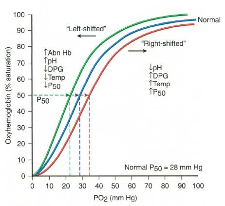
تصویر 9در ورزش شدید یا اسیدوز بافتی، افزایش 2,3-DPG تحویل اکسیژن را آسانتر میکند. ظرفیت اکسیژنرسانیِ استفادهنشده در حالت عادی اهمیت دارد، چون در ورزش شدید یا خونریزی شدید بدن ممکن است به اکسیژنرسانی بیشتری نیاز داشته باشد. در خونریزی شدید نمیتوان منتظر تولید گلبولهای قرمز تازه ماند؛ طبق توضیح مدرس، حدود یک هفته طول میکشد تا گلبولهای قرمز جدید وارد جریان خون شوند. اگر هیپوکسی بهخصوص مغز را تحتتأثیر قرار دهد، آسیب ممکن است رخ دهد؛ ازاینرو، ظرفیت اضافهٔ هموگلوبین در چنین شرایطی قابل استفاده است.
برخی هموگلوبینهای ارثی تمایل زیادی به اکسیژن دارند و high-affinity hemoglobin نامیده میشوند؛ P50 آنها کاهش مییابد و منحنی left shift میشود. در low-affinity hemoglobin، P50 افزایش مییابد و تحویل اکسیژن آسانتر است. این موارد در مبحث اختلالات هموگلوبین با جزئیات بیشتری بررسی میشوند.
ژنهای زنجیرههای globin در دو خانواده قرار دارند: خانوادهٔ آلفا روی کروموزوم ۱۶ و خانوادهٔ بتا روی کروموزوم ۱۱. ترکیب زنجیرهها هموگلوبینهای مختلفی میسازد. رویان به دورهٔ یک تا دو ماه اول بارداری گفته میشود و پس از آن دورهٔ جنینی آغاز میشود.
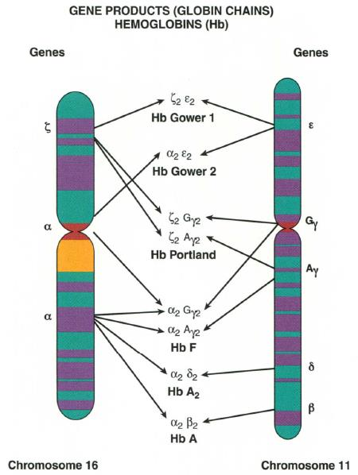
تصویر 10زنجیرههای خانوادهٔ آلفا و زتا روی کروموزوم ۱۶ و زنجیرههای خانوادهٔ بتا، دلتا، گاما و اپسیلون روی کروموزوم ۱۱ قرار دارند.
در بدو تولد، حدود ۶۰ تا ۷۰ درصد هموگلوبین HbF و حدود ۲۰ تا ۳۰ درصد HbA است. پس از تولد، switching از HbF به هموگلوبین غالب بزرگسالان رخ میدهد و معمولاً بین ۶ماهگی تا ۲سالگی کامل میشود.
زنجیرههای رویانی زتا و اپسیلون در دو تا سه ماه نخست تولید میشوند؛ پس از آن، تولید گاما بهشدت افزایش مییابد. بعد از تولد، تولید گاما افت میکند و زنجیرهٔ بتا افزایش مییابد؛ با کاملشدن switching، ترکیب آلفا و بتا HbA را میسازد. پس از ۲سالگی، HbF بسیار کم است، ممکن است دیده نشود یا کمتر از ۱ درصد باشد. HbA حدود ۹۷ تا ۹۸ درصد و HbA₂ حدود ۱٫۵ تا ۳ درصد است؛ در توضیح مدرس مقدار HbA₂ حدود ۱٫۵ تا ۳٫۵ درصد نیز ذکر شده است.
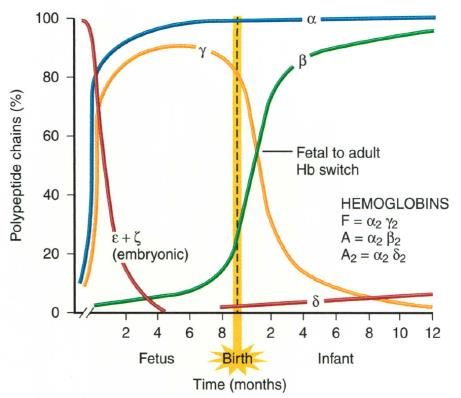
تصویر 11در تصویر، F = γ₂، A = α₂β₂ و A₂ = α₂δ₂ درج شدهاند؛ «Fetal to adult Hb switch» و سهم Polypeptide chains (%) در طول Time (months) تا زمان Birth و Infant نمایش داده میشود. نمودار نشان میدهد زنجیرههای رویانی در ابتدای رشد تولید میشوند، گاما در دورهٔ جنینی افزایش مییابد و پس از تولد بهتدریج جای خود را به بتا میدهد.
خاموششدن ژنها با توقف رونویسی همراه است و فشردهشدن کروماتین از عوامل این خاموشی است. برای بیان ژن، هیستونها باید آزاد شوند و کروماتینِ فشرده و بستهبندیشده باز شود؛ هنگام خاموششدن ژن، ساختار دوباره فشرده و بستهبندی میشود.
مطالعات مربوط به ژنهای globin از مدلهای مهم بررسی روشن و خاموششدن ژنها هستند؛ از جمله بررسی اینکه چرا در ماههای آغازین زنجیرههای رویانی مانند اپسیلون و زتا ساخته میشوند و در دورهٔ جنینی زنجیرهٔ گاما تولید میشود. زنجیرههای رویانی اپسیلون و زتا پس از خاموششدن، بهطور معمول دوباره فعال نمیشوند، اما HbF ممکن است دوباره فعال شود؛ برای نمونه، در بارداری سنتز HbF کمی افزایش مییابد.
داروهایی مانند هیدروکسیاوره و آزاسیتیدین تولید HbF را افزایش میدهند و این افزایش بهعنوان راهکاری درمانی برای بیماری داسیشکل و بتا تالاسمی بهکار میرود. همچنین با استفاده از CRISPR یا «قیچی ژنتیک» تلاش شده است تولید HbF دوباره افزایش یابد. بیماریهای خونی، از جمله بیماری داسیشکل و تالاسمی، از نخستین بیماریهایی بودهاند که در آنها مطالعات in vivo با قیچی ژنتیکی انجام شدهاند. زنجیرههای globin و اختلالاتی مانند تالاسمی از مدلهای مطالعهٔ روشن و خاموششدن ژنها نیز به شمار میروند.
در دورهٔ رویانی، خونسازی ابتدا در AGM و کیسهٔ زرده انجام میشود. در منابع قدیمیتر تأکید بیشتری بر کیسهٔ زرده بوده است، اما در سالهای اخیر AGM بهعنوان نخستین جایگاه آغاز خونسازی مورد تأکید قرار میگیرد. پس از آن، کبد و طحال در دورهٔ جنینی جایگاههای مهم خونسازی هستند. از میانههای بارداری، استخوانها نیز محل خونسازی میشوند.
در بزرگسالان، خونسازی عمدتاً در این نواحی انجام میشود:
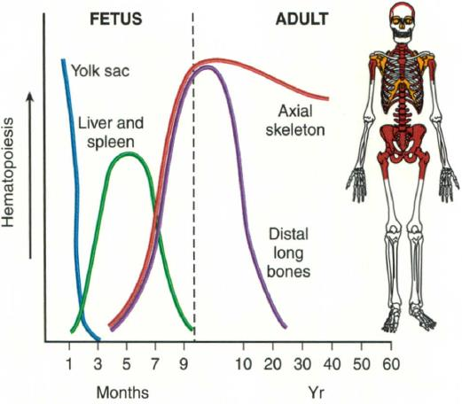
تصویر 12یکی از مزیتهای خونسازی در استخوان، محافظت است. سلولهای مادر خونساز به اشعه، بهویژه اشعهٔ UV خورشید، حساساند. بافت هماتوپوئتیک بازسازی زیادی دارد؛ روزانه میلیاردها RBC، پلاکت و گلبول سفید تخریب و جایگزین میشوند. برخی سلولهای مادر سالها بهصورت dormant باقی میمانند. قرارگرفتن در مغز استخوان یا فضای مغز استخوان از آنها، بهویژه در برابر اشعهٔ UV، محافظت میکند.
مهمترین هورمون تنظیمکنندهٔ اریتروپوئز (erythropoiesis)، یعنی ساختهشدن گلبولهای قرمز، اریتروپویتین است.
اریتروپویتین عمدتاً در کلیه تولید میشود و مقدار بسیار کمتری نیز در کبد ساخته میشود؛ اثر تولید کبدی بر این سیستم ناچیز است. کلیه هیپوکسی را حس میکند.
کمخونی شدید، بیماری قلبی، سیگارکشیدن زیاد یا high-affinity hemoglobin میتوانند به هیپوکسی بافتی منجر شوند و تولید اریتروپویتین را افزایش دهند. high-affinity hemoglobin اکسیژن را بهراحتی میگیرد، اما آن را بهخوبی به بافتها تحویل نمیدهد. سیگارکشیدن زیاد نیز میتواند با ایجاد هیپوکسی به افزایش غلظت گلبولهای قرمز منجر شود.
مهمترین مولکول تنظیمکنندهٔ بیان ژن اریتروپویتین HIF (hypoxia-inducible factor) است که زیرواحدهای آلفا و بتا دارد. HIF بهطور مداوم تولید میشود، اما زیرواحد آلفا در شرایط معمول ناپایدار است و تخریب میشود؛ زیرواحد بتا بهتنهایی کافی نیست.
در شرایط هیپوکسیک، HIF-α پایدار میشود و با HIF-β جفت میشود. این مجموعه به ناحیهٔ enhancer ژن اریتروپویتین متصل میشود و بیان آن را بالا میبرد؛ در نتیجه، mRNA و سپس مقدار پروتئین اریتروپویتین افزایش مییابد.
اریتروپویتین (EPO) توسط سلولهای بینابینی پریتوبولار (peritubular interstitial cells) کلیه تولید میشود. این سلولها خودشان سلول کلیوی نیستند؛ بلکه سلولهای فیبروبلاستمانندی هستند که در فضای بینابینی و بین توبولهای کلیوی (ناحیهٔ پریتوبولار) قرار گرفتهاند. این سلولها در پاسخ به هیپوکسی، از طریق HIF-2α بیان EPO را افزایش میدهند. پس از افزایش تولید، اریتروپویتین وارد جریان خون میشود و به مغز استخوان میرود و در آنجا تولید گلبولهای قرمز را تحریک میکند.
بیماران مبتلا به بیماری مزمن کلیوی ممکن است بهدلیل کاهش توانایی بافت کلیه در تولید اریتروپویتین دچار کمخونی شوند؛ برای درمان کمخونی این بیماران اریتروپویتین تجویز میشود.
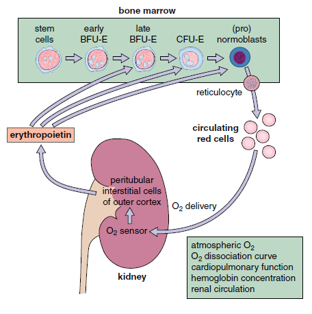
تصویر 13اریتروپویتین روی پیشسازهای گلبول قرمز، بهویژه CFU-E، اثر میگذارد و از آپوپتوز آنها جلوگیری میکند. در نتیجه، تکثیر CFU-E و پیشسازهای گلبول قرمز در مغز استخوان افزایش مییابد و آزادسازی گلبولهای قرمز جوان از مغز استخوان نیز بیشتر میشود.
آخرین پیشساز گلبول قرمز سلول ارتوکروماتیک است. پس از ازدستدادن هسته، این سلول به رتیکولوسیت تبدیل میشود.
رتیکولوسیت جوانترین گلبول قرمز است و گلبول قرمز کارآمدتری از آن نداریم. نام reticulocyte از reticulum بهمعنی رشته یا شبکه گرفته شده است. در رنگآمیزی حیاتی با نیومتیلن بلو (new methylene blue)، رشتههای ریبوزومی رتیکولوسیت دیده میشوند؛ این سلولها پروتئینسازی زیادی دارند و پروتئینی که میسازند globin است.
رتیکولوسیتها نیز تحتتأثیر اریتروپویتیناند: هم تکثیر پیشسازهای اولیه افزایش مییابد و هم رتیکولوسیتها زودتر وارد خون محیطی میشوند. در شرایط معمول، رتیکولوسیتها حدود دو روز در مغز استخوان میمانند؛ با افزایش اریتروپویتین، ممکن است یک روز در مغز استخوان بمانند و زودتر وارد خون محیطی شوند. به گفتهٔ مدرس، این ورود زودتر بهخودیخود مشکل عملکردی ایجاد نمیکند و عملکرد رتیکولوسیتها خوب است.
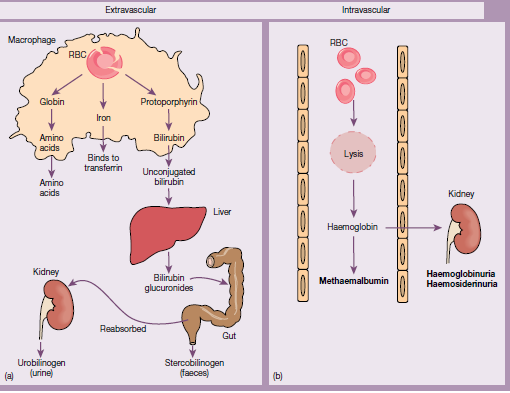
تصویر 14همولیز در بدن میتواند داخلعروقی (intravascular) یا خارجعروقی (extravascular) باشد.
همولیز داخلعروقی درون رگها رخ میدهد. همولیز خارجعروقی عمدتاً در کبد و طحال، بهخصوص در طحال و کبد، اتفاق میافتد. در فرد سالم، بیش از ۹۰ درصد گلبولهای قرمزی که عمر ۱۲۰روزهٔ خود را گذراندهاند بهصورت خارجعروقی تخریب میشوند و کمتر از ۱۰ درصد تخریب داخلعروقی است.
اگر تخریب گلبولهای قرمز افزایش یابد و در پی آن کمخونی ایجاد شود، به آن کمخونی همولیتیک میگویند.
این کمخونی میتواند داخلعروقی یا خارجعروقی باشد. برای نمونه، در فاویسم یا باقلازدگی تخریب گلبول قرمز رخ میدهد و کمخونی میتواند از نوع non-immune باشد، چون فاویسم در اثر نقص آنزیمی ایجاد میشود.
کمخونی همولیتیک همچنین میتواند immune یا non-immune باشد. این اصطلاحات در جلسات بعد و هنگام بررسی کمخونیهای همولیتیک با جزئیات بیشتری مطرح میشوند.
| سطح | ویژگیها |
|---|---|
| مونومر | آزاد، پایدار و کارآمد نیست؛ پس از ساختهشدن سریع دایمر تشکیل میدهد. |
| دایمر آلفا-بتا | قویترین ساختار هموگلوبین؛ برای پایداری گلوبین تازهسنتزشده ضروری؛ تا حدی قادر به انتقال اکسیژن و CO₂ است. |
| تترامر | از دو دایمر تشکیل میشود و برای عملکرد طبیعی و کامل هموگلوبین ضرورت دارد. |
| ویژگی | شرح |
|---|---|
| ساختار heme | تتراپیرولی؛ دارای چهار حلقهٔ پیرول است. |
| آهن در heme | Fe²⁺ و واقع در مرکز heme. |
| عدد کئوردیناسیون آهن | ۶؛ چهار جایگاه را حلقهٔ heme اشغال میکند و دو جایگاه باقیمانده در توضیح درس به هیستیدین proximal و O₂ مربوطاند. |
| جایگاه heme در globin | بین هلیکسهای E و F، در پاکت heme. |
| اتصال O₂ به هموگلوبین | چهار مولکول O₂ به یک تترامر متصل میشوند؛ هر مونومر یک O₂ میگیرد. |
| بخش مسیر | نکتههای بیانشده در درس |
|---|---|
| آغاز مسیر | Succinyl CoA و Glycine با ALA synthase ترکیب میشوند و ALA تولید میشود؛ واکنش در حضور پیریدوکسال (ویتامین B6) انجام میشود. |
| گام بعدی | ALA dehydratase پورفوبیلینوژن را میسازد. |
| ادامهٔ مسیر | چهار پورفوبیلینوژن به تشکیل ساختار تتراپیرولی کمک میکنند؛ مسیر از واسطههای بعدی به پروتوپورفیرینوژن و پروتوپورفیرین میرسد. |
| گام پایانی | آهن وارد پروتوپورفیرین میشود و heme ساخته میشود. |
| محل مسیر | مراحل ابتدایی و انتهایی، از جمله جایگیری آهن، در میتوکندریاند؛ بخشی از مسیر در سیتوپلاسم انجام میشود و مولکول پس از مرحلهٔ کوپروپورفیرینوژن دوباره وارد میتوکندری میشود. |
| تنظیم سرعت | ALA synthase آنزیم اصلی تنظیمکنندهٔ سرعت مسیر است؛ ferrochelatase یا heme synthase نیز آنزیمی مهم است. |
| شاخههای I و III | طبق توضیح مدرس، Uroporphyrinogen I و Coproporphyrinogen I در ساخت heme شرکت نمیکنند و بیشتر از راه ادرار و مدفوع دفع میشوند؛ Uroporphyrinogen III و Coproporphyrinogen III در نهایت در ساخت heme شرکت میکنند. |
| موضوع | توضیح |
|---|---|
| پورفیریا | اختلالات سنتز heme؛ در بعضی فرمها پیشسازهای heme در پوست یا دندانها رسوب میکنند و ممکن است دندانها قرمز شوند. |
| پیامدهای ذکرشده | فوتوفوبیا، پرهیز از نور، اختلالات عصبی و حملههای ناگهانی. |
| تخریب heme | در نهایت به تولید بیلیروبین میانجامد؛ بیلیروبین پس از طی مراحلی در روده به استرکوبیلین میرسد و استرکوبیلین عامل رنگ مدفوع است. |
| ساختار پروتئین | شرح |
|---|---|
| ساختار اول (primary) | ترتیب آمینواسیدها در زنجیرهٔ پروتئینی. |
| ساختار دوم (secondary) | عمدتاً آلفا هلیکس؛ حدود ۷۰ تا ۸۰ درصد ساختار ثانویهٔ globin آلفا هلیکس است. ورقهٔ بتا نیز شکل دیگری از ساختار ثانویه است. |
| ساختار سوم (tertiary) | آرایش و تاخوردگی فضایی زنجیره؛ ساختار سهبعدی شکل میگیرد و heme در پاکت خود قرار میگیرد. |
| ساختار چهارم (quaternary) | آرایش چند زنجیره در تترامر هموگلوبین. |
| وضعیت یا محل | ویژگی |
|---|---|
| هموگلوبین اکسیژنه | تترامر در وضعیت relaxed قرار دارد. |
| هموگلوبین deoxygenated | 2,3-DPG یا DPG بین زنجیرههای بتا قرار میگیرد و تترامر در حالت tense است؛ حضور DPG تمایل هموگلوبین به ازدستدادن اکسیژن را افزایش میدهد. |
| ریه، نقطهٔ A | فشار اکسیژن حدود ۹۵ تا ۱۰۰ mmHg؛ saturation بسیار بالا. |
| بافتها، نقطهٔ B | فشار اکسیژن حدود ۴۰ mmHg؛ saturation حدود ۷۵٪ و تقریباً ۲۵٪ ظرفیت اکسیژن هموگلوبین به بافتها تحویل داده میشود. |
| تغییر | تغییر P50 و منحنی | اثر |
|---|---|---|
| افت pH، افزایش 2,3-DPG، افزایش دما یا فعالیت بدنی شدید | افزایش P50؛ right shift | تمایل هموگلوبین به اکسیژن کاهش مییابد و تحویل اکسیژن به بافت آسانتر میشود. |
| افزایش pH، کاهش DPG یا افت دما | left shift | هموگلوبین در فشار پایینتری اکسیژنه میشود. |
| high-affinity hemoglobin | کاهش P50؛ left shift | تمایل به اکسیژن زیاد است. |
| low-affinity hemoglobin | افزایش P50 | تحویل اکسیژن آسانتر است. |
| خانوادهٔ ژنی | کروموزوم | زنجیرهها |
|---|---|---|
| آلفا | ۱۶ | آلفا و زتا |
| بتا | ۱۱ | بتا، دلتا، گاما و اپسیلون |
| نوع هموگلوبین | ترکیب زنجیرهها | دوره یا نکته |
|---|---|---|
| Hb Gower 1 | زتا₂اپسیلون₂ | رویانی |
| Hb Gower 2 | آلفا₂اپسیلون₂ | رویانی |
| Hb Portland | زتا₂گاما₂ | رویانی |
| HbF | آلفا₂گاما₂ | هموگلوبین غالب دورهٔ بارداری |
| HbA | آلفا₂بتا₂ | هموگلوبین غالب بزرگسالان |
| HbA₂ | آلفا₂دلتا₂ | از نظر فیزیولوژیک عملکرد زیادی ندارد، هرچند مقداری از آن وجود دارد؛ زنجیرهٔ دلتا از زمان تولد یا کمی پیش از آن ساخته میشود. |
| زمان یا مرحله | زنجیرهها و ترکیب هموگلوبین |
|---|---|
| دو تا سه ماه نخست | زنجیرههای رویانی زتا و اپسیلون تولید میشوند. |
| دورهٔ جنینی | تولید گاما بهشدت افزایش مییابد؛ HbF غالب است. |
| بدو تولد | حدود ۶۰ تا ۷۰٪ HbF و حدود ۲۰ تا ۳۰٪ HbA است. |
| پس از تولد | تولید گاما کاهش و زنجیرهٔ بتا افزایش مییابد؛ switching از HbF به هموگلوبین غالب بزرگسالان رخ میدهد. |
| حدود ۶ماهگی تا ۲سالگی | switching معمولاً کامل میشود. |
| پس از ۲سالگی | HbF بسیار کم است، ممکن است دیده نشود یا کمتر از ۱٪ باشد؛ HbA حدود ۹۷ تا ۹۸٪ است. HbA₂ در متن حدود ۱٫۵ تا ۳٪ و در توضیح مدرس حدود ۱٫۵ تا ۳٫۵٪ ذکر شده است. |
| دوره | محلهای خونسازی بیانشده |
|---|---|
| دورهٔ رویانی | ابتدا AGM و کیسهٔ زرده؛ در سالهای اخیر AGM بهعنوان نخستین جایگاه آغاز خونسازی مورد تأکید قرار میگیرد. |
| دورهٔ جنینی | کبد و طحال؛ از میانههای بارداری استخوانها نیز محل خونسازی میشوند. |
| بزرگسالی | استخوانهای پهن مانند لگن و جمجمه، مهرهها و دندهها، و انتهای proximal استخوانهای دراز مانند استخوان ران و بازو. |
| شرایط | وضعیت HIF و پیامد |
|---|---|
| شرایط معمول | HIF بهطور مداوم تولید میشود، اما زیرواحد آلفا ناپایدار است و تخریب میشود؛ زیرواحد بتا بهتنهایی کافی نیست. |
| شرایط هیپوکسیک | HIF-α پایدار میشود، با HIF-β جفت میشود و مجموعه به enhancer ژن اریتروپویتین متصل میشود؛ بیان ژن، mRNA و مقدار پروتئین اریتروپویتین افزایش مییابد. |
| موضوع | شرح |
|---|---|
| اثر بر پیشسازها، بهویژه CFU-E | جلوگیری از آپوپتوز و افزایش تکثیر CFU-E و پیشسازها در مغز استخوان. |
| آزادسازی از مغز استخوان | آزادسازی گلبولهای قرمز جوان افزایش مییابد. |
| رتیکولوسیتها | زودتر وارد خون محیطی میشوند؛ زمان ماندن معمول در مغز استخوان حدود دو روز است و با افزایش اریتروپویتین ممکن است به یک روز برسد. |
| همولیز داخلعروقی | تخریب درون رگها؛ در فرد سالم کمتر از ۱۰٪ تخریب گلبولهای قرمز از این نوع است. |
| همولیز خارجعروقی | تخریب عمدتاً در کبد و طحال؛ در فرد سالم بیش از ۹۰٪ گلبولهای قرمزِ پایانیافتهٔ عمر ۱۲۰روزه به این روش تخریب میشوند. |
| کمخونی همولیتیک | میتواند بر اساس محل همولیز داخلعروقی یا خارجعروقی و بر اساس immune بودن، immune یا non-immune باشد. فاویسم یا باقلازدگی نمونهٔ non-immune و ناشی از نقص آنزیمی است. |
توضیح دهید هموگلوبین چگونه سازمان مییابد و چرا تشکیل تترامر برای عملکرد طبیعی اهمیت دارد.
هموگلوبین از heme و globin ساخته میشود و در حالت کلی تترامری متشکل از چهار زنجیره و دو دایمر است. در HbA، هر دایمر از یک زنجیرهٔ آلفا و یک زنجیرهٔ بتا تشکیل میشود. مونومر پایدار و کارآمد نیست و سریعاً دایمر تشکیل میدهد؛ دایمر برای پایداری گلوبین تازهسنتزشده ضروری است و تا حدی اکسیژن و CO₂ انتقال میدهد، اما عملکرد کامل هموگلوبین به تترامر وابسته است.
مراحل اصلی سنتز heme، آنزیم تنظیمکنندهٔ سرعت و محلهای اصلی انجام مسیر را شرح دهید.
سوکسینیلکوآنزیم A و گلایسین بهوسیلهٔ ALA synthase و در حضور پیریدوکسال (ویتامین B6) ترکیب میشوند و ALA میسازند. سپس ALA dehydratase پورفوبیلینوژن را تولید میکند و مسیر از طریق واسطهها به پروتوپورفیرینوژن و پروتوپورفیرین میرسد. در مرحلهٔ نهایی، آهن وارد پروتوپورفیرین میشود و heme ساخته میشود. ALA synthase تنظیمکنندهٔ اصلی سرعت مسیر است. مراحل ابتدایی و انتهایی در میتوکندری انجام میشوند؛ بخشی از مسیر در سیتوپلاسم است و پس از مرحلهٔ کوپروپورفیرینوژن، مولکول دوباره وارد میتوکندری میشود.
همکاری در اتصال اکسیژن به هموگلوبین چگونه به شکل سیگموئیدی منحنی اشباع منجر میشود؟ P50 چه معنایی دارد؟
اتصال یا جداشدن نخستین O₂ دشوارتر است، اما پس از آن اتصال یا جداشدن اکسیژنهای بعدی آسانتر میشود. اتصال نخستین اکسیژن شکل فضایی مونومر را کمی تغییر میدهد و این تغییر به تترامر و مونومر مجاور منتقل میشود؛ در نتیجه، اتصال یا جداشدن اکسیژنهای بعدی آسانتر میشود و منحنی اشباع شکل سیگموئیدی پیدا میکند. P50 فشاری است که در آن ۵۰ درصد هموگلوبینها اکسیژنهاند.
تغییر ترکیب هموگلوبین از دورهٔ رویانی و جنینی به بزرگسالی را همراه با زمان تقریبی switching توضیح دهید.
زنجیرههای رویانی زتا و اپسیلون در دو تا سه ماه نخست تولید میشوند و سپس تولید گاما در دورهٔ جنینی افزایش مییابد و HbF غالب میشود. پس از تولد، تولید گاما کاهش و بتا افزایش مییابد و HbA ساخته میشود. Switching معمولاً بین ۶ماهگی تا ۲سالگی کامل میشود. پس از ۲سالگی، HbF بسیار کم یا کمتر از ۱٪ است و HbA حدود ۹۷ تا ۹۸٪ هموگلوبین را تشکیل میدهد.
نقش اریتروپویتین و HIF را در پاسخ به هیپوکسی و تولید گلبول قرمز شرح دهید.
در شرایط هیپوکسیک، HIF-α پایدار میشود و با HIF-β جفت میشود. این مجموعه به enhancer ژن اریتروپویتین متصل میشود و بیان ژن را افزایش میدهد؛ در نتیجه، mRNA و پروتئین اریتروپویتین بیشتر میشود. اریتروپویتین عمدتاً در کلیه تولید و به مغز استخوان منتقل میشود؛ روی پیشسازهای گلبول قرمز، بهویژه CFU-E، اثر میگذارد، از آپوپتوز آنها جلوگیری میکند و تکثیر پیشسازها و آزادسازی گلبولهای قرمز جوان را افزایش میدهد.
کدام گزینه دربارهٔ سازمانیافتگی HbA درست است؟
HbA از دو دایمر آلفا-بتا تشکیل میشود؛ در هر دایمر، یک زنجیرهٔ آلفا با یک زنجیرهٔ بتا جفت است.
در حضور اکسیژن، طبق توضیح درس کدام مولکول جایگاه کئوردیناسیون باقیماندهٔ آهن را میگیرد؟
طبق توضیح درس، در حضور اکسیژن یکی از جایگاههای باقیماندهٔ آهن را O₂ میگیرد.
کدام آنزیم تنظیمکنندهٔ اصلی سرعت مسیر سنتز heme معرفی شده است؟
ALA synthase تنظیمکنندهٔ اصلی سرعت مسیر است؛ ferrochelatase نیز آنزیمی مهم است.
طبق توضیح مدرس، کدام جفت از واسطهها در ساخت heme شرکت نمیکنند و بیشتر از راه ادرار و مدفوع دفع میشوند؟
طبق توضیح مدرس، Uroporphyrinogen I و Coproporphyrinogen I در ساخت heme شرکت نمیکنند و بیشتر از راه ادرار و مدفوع دفع میشوند.
حدوداً چه درصدی از ساختار ثانویهٔ globin آلفا هلیکس است؟
حدود ۷۰ تا ۸۰ درصد ساختار ثانویهٔ globin آلفا هلیکس است.
کدام ترکیب با right shift منحنی و افزایش P50 همراه است؟
افت pH، افزایش 2,3-DPG و افزایش دما از عوامل right shift هستند؛ این عوامل P50 را افزایش و تمایل هموگلوبین به اکسیژن را کاهش میدهند.
HbF از ترکیب کدام زنجیرهها تشکیل شده است؟
HbF از آلفا₂گاما₂ تشکیل شده و هموگلوبین غالب دورهٔ بارداری است.
کدام عبارت دربارهٔ اثر هیپوکسی بر HIF درست است؟
در شرایط هیپوکسیک، HIF-α پایدار میشود و با HIF-β جفت میشود؛ این مجموعه به enhancer ژن اریتروپویتین متصل میشود و بیان آن را بالا میبرد.
آخرین پیشساز گلبول قرمز که پس از ازدستدادن هسته به رتیکولوسیت تبدیل میشود کدام است؟
آخرین پیشساز گلبول قرمز سلول ارتوکروماتیک است؛ پس از ازدستدادن هسته به رتیکولوسیت تبدیل میشود.
در فرد سالم، بیش از ۹۰ درصد گلبولهای قرمزی که عمر ۱۲۰روزهٔ خود را گذراندهاند چگونه تخریب میشوند؟
بیش از ۹۰ درصد این گلبولهای قرمز بهصورت خارجعروقی تخریب میشوند و کمتر از ۱۰ درصد تخریب داخلعروقی است.
ادیتور: حسین حسینی
منابع استفادهشده:
برآورد تقریبی تکمیل محتوا: حدود ۱۰۰٪ بر اساس محتوای اسلاید و صوتِ ارائهشده.